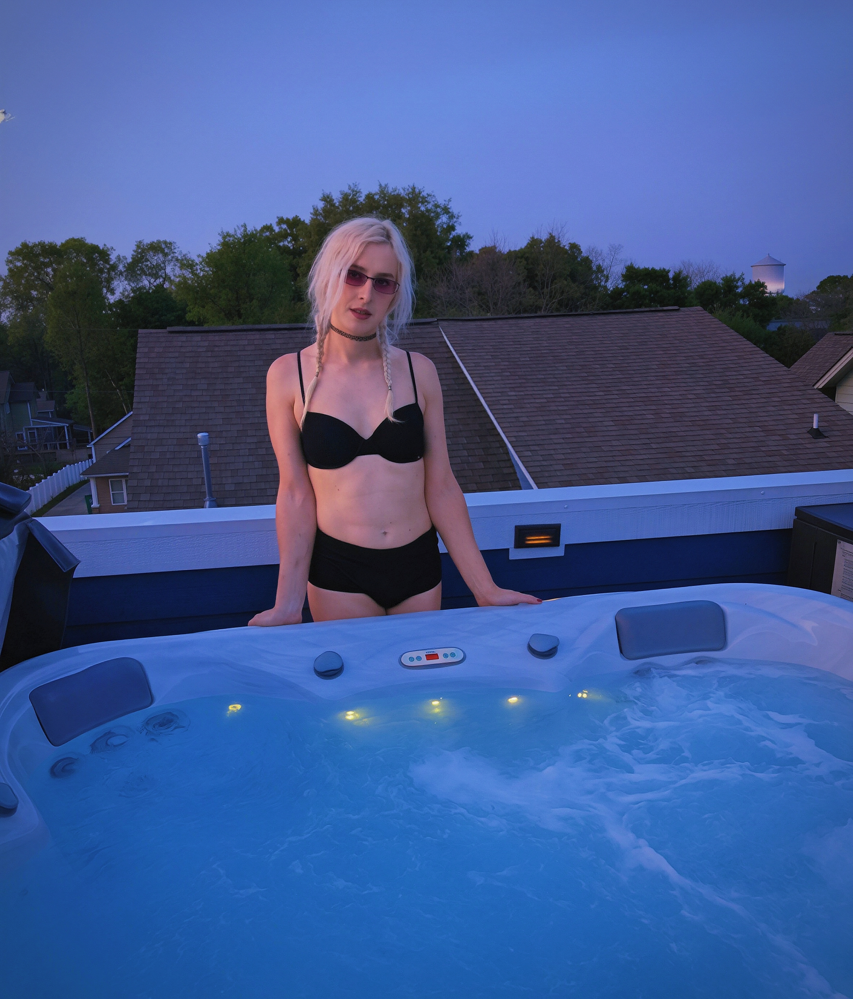

s
.
l
VISUAL COLLECTION
☼
Dusk
☾
MIAMI / FLORIDA
Scout
.
London
25°46′ N / 80°08′ W
MIAMI / DUSK
THE PINBOARD
IMAGES / TEXT / AUDIO
01 / VIDEO
↗
NORTH BISCAYNE SUNRISE
MIAMI / 01
TEXT / 01
BOLD
TITLE
Text placeholder.
CURRENTLY ON REPEAT
SCOUT FM
33⅓
Something About Us
Daft Punk · Discovery
2001
↗
Find it on YouTube

↗
ROOFTOP STAYCATION
CHARLOTTE / 01
Shore House with Clancy
×
FROM THE PINBOARD
Photo source ↗